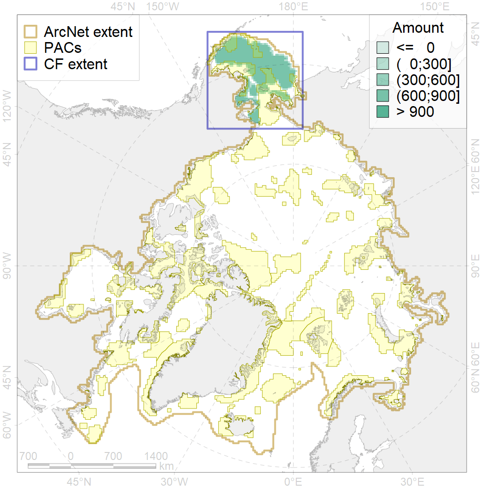
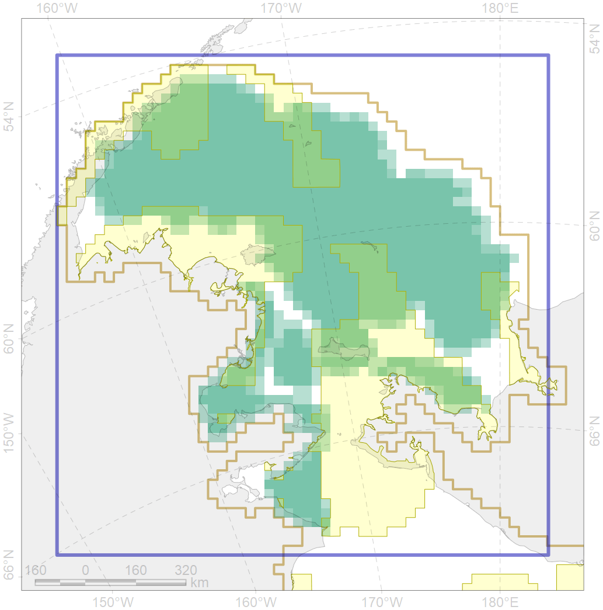

6078

| CF ID | 6078 |
| CF Name | Common murre (Uria aalge inornata) wintering grounds |
| Time Period | 2016 |
| Source(s) | Smith et al 2017 |
| Seasonality | October-April |
| Depth Horizon | >0 m |
| Methodology | Field Data |
| Author Name | Gavrilo, Tertitski |
| Notes | |
| Conservation Target Set in the Scenario | 0.18 |
| Conservation Target Achieved in the Scenario | 0.284 (Scenario: 157.7%) |
| PAC ID | Proportion in the PAC | Contribution to ArcNet Target Achievement | PAC’s Contribution to the Achieved Target |
|---|---|---|---|
| 1 | 5.1% | 26.2% | 16.6% |
| 2 | 4.3% | 18.6% | 11.8% |
| 3 | 6.2% | 28.8% | 18.3% |
| 4 | 1.2% | 5.7% | 3.6% |
| 5 | 10.7% | 54.9% | 34.8% |
| 6 | 0.1% | 0.3% | 0.2% |
| inner | 27.6% | 134.6% | 85.4% |
| outer | 72.4% | 23.1% | 14.6% |